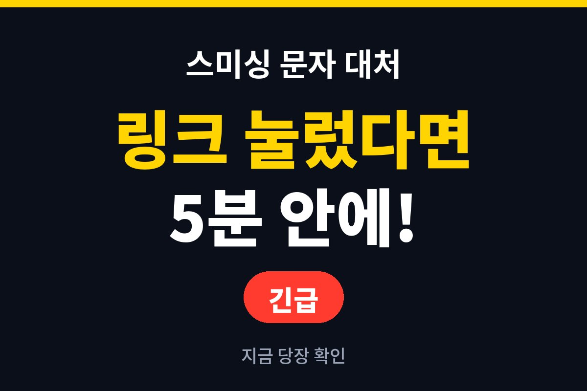
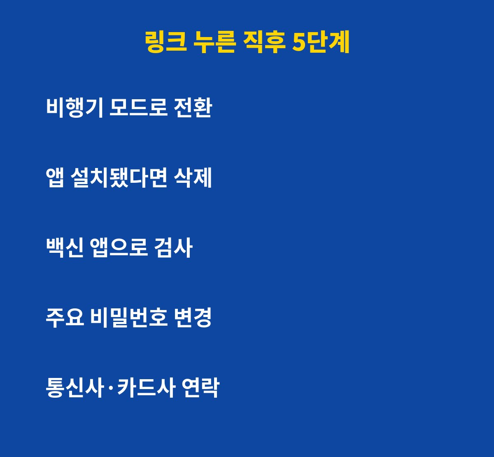
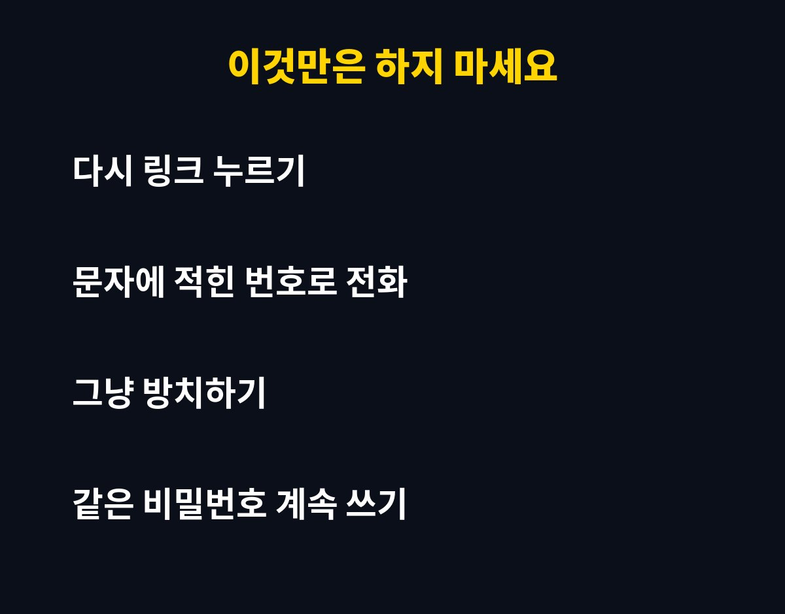

스미싱 문자 링크를 눌렀다면 가장 먼저 할 일은 인터넷 연결을 끊고 앱 설치 여부를 확인하는 것이에요. 택배·청첩장·과태료 문자를 받고 무심코 누른 분이라면 지금 바로 보셔야 해요. 그런데 링크만 눌렀다고 무조건 털리는 건 아니에요. 오히려 그 뒤의 행동이 피해를 가르는데, 이유는 아래에 있어요.
링크만 눌렀는데 정말 위험할까요?
링크를 눌러 열기만 했다면 곧바로 피해가 생기는 경우는 많지 않아요. 문제는 그다음이에요. 가짜 사이트에서 앱 설치를 유도하거나 개인정보를 입력하게 만드는 게 수법의 핵심이거든요.
앱을 설치했다면 문자·연락처·인증번호가 외부로 넘어갈 수 있어요. 개인정보를 입력했다면 그 정보로 소액결제나 대출 시도가 이어질 수 있고요. 그래서 "눌렀는지"보다 "무엇을 설치하고 입력했는지"가 더 중요해요.

눌렀다면 5분 안에 뭐부터 해야 할까요?
순서대로 따라 하면 돼요.
1) 비행기 모드를 켜서 네트워크를 차단하세요.
2) 최근 설치된 낯선 앱이 있으면 삭제하세요. 삭제가 안 되면 안전 모드로 재부팅해서 지워요.
3) 백신 앱으로 전체 검사를 해요.
4) 다른 기기에서 주요 계정 비밀번호를 바꾸세요.
5) 통신사와 카드사에 연락해 소액결제 차단과 이상 거래를 확인하세요.
이 표로 상황별 조치를 한눈에 볼까요?
| 상황 | 해야 할 일 |
| 링크만 열어봄 | 브라우저 기록 삭제, 백신 검사, 주의 관찰 |
| 앱까지 설치함 | 비행기 모드, 앱 삭제, 비밀번호 변경, 신고 |
| 개인정보·카드번호 입력 | 카드사 연락, 지급정지 문의, 경찰 신고 |
| 이미 결제·송금됨 | 즉시 112 신고, 금융사에 지급정지 요청 |

절대 하면 안 되는 행동은 뭘까요?
첫째, 문자에 적힌 전화번호로 다시 연락하는 거예요. 그 번호는 사기범에게 연결될 수 있어요. 둘째, "별일 없겠지" 하고 그냥 두는 거예요. 시간이 지날수록 피해 범위가 커져요. 셋째, 같은 비밀번호를 여러 곳에 계속 쓰는 거예요. 한 곳이 뚫리면 줄줄이 위험해져요.
의심 문자는 118(한국인터넷진흥원 불법스팸 신고)로 신고할 수 있고, 피해가 생겼다면 112에 먼저 알리세요. 평소에는 통신사의 스팸 차단 서비스와 소액결제 한도 설정을 켜 두면 훨씬 안전해요.
앞으로 어떻게 예방할까요?
출처 불명의 앱 설치 허용을 꺼 두고, 택배·기관 문자는 공식 앱에서 직접 확인하세요. 문자 속 링크는 아무리 급해 보여도 누르기 전에 한 번 멈추는 습관이 최고의 방어예요.
도움이 되셨다면 구독해 두세요. 생활 속 IT 위험 대처법을 계속 알려드릴게요.
기사·공식 발표 기준이며 출시·가격 정보는 바뀔 수 있어요.